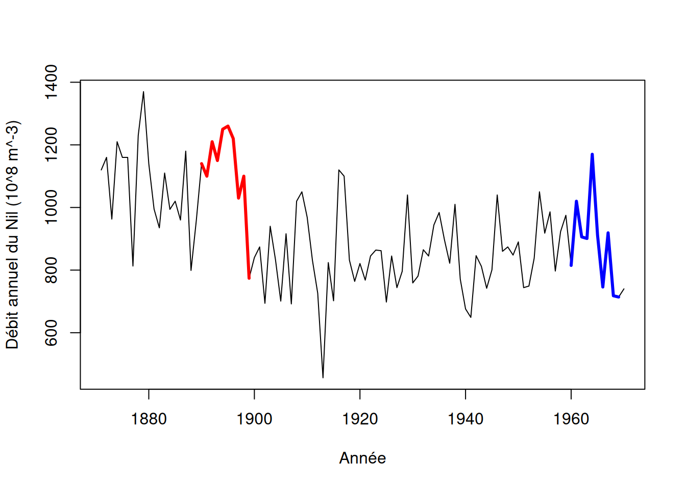
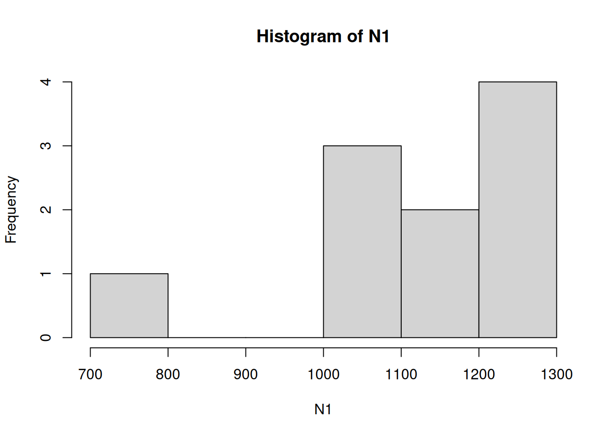
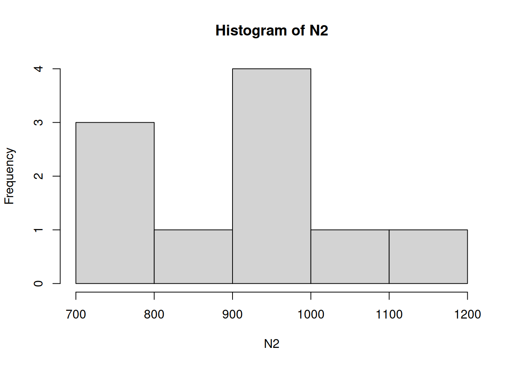
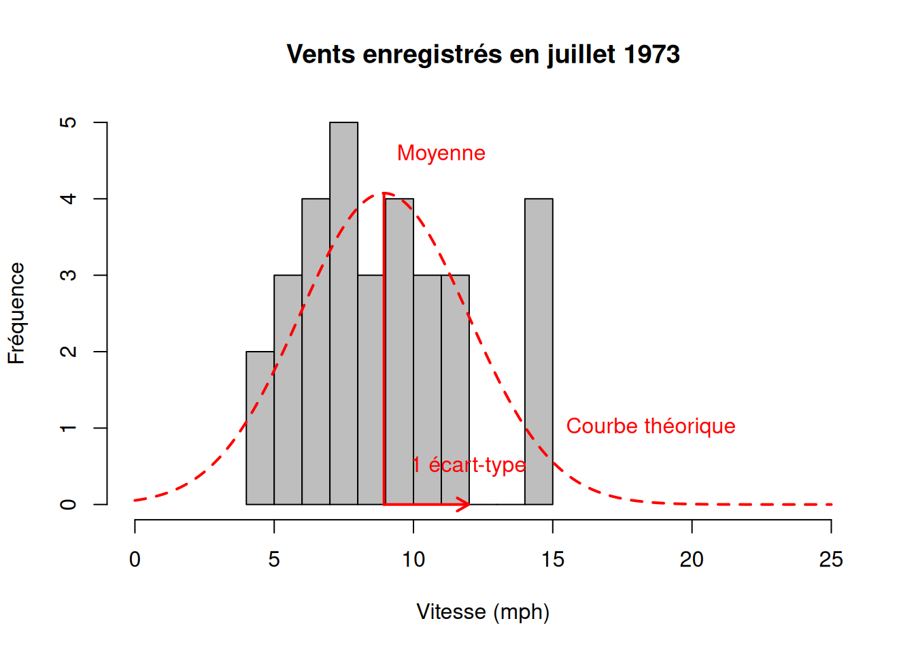
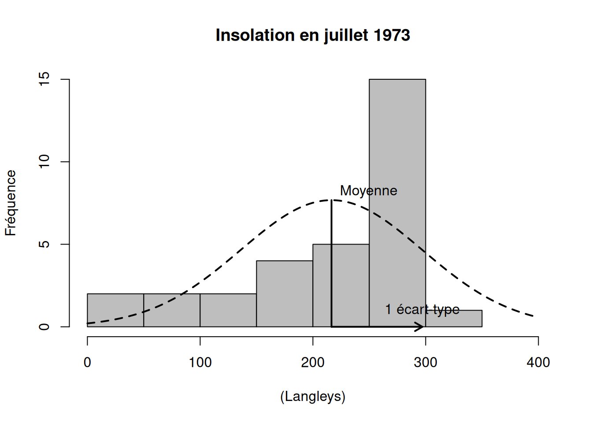

À la fin de cette capsule, vous serez en mesure de:
Comprendre le principe d’un test non paramétrique sur les rangs,
Connaître les tests non-paramétriques de comparaison de moyennes disponibles dans R,
Appliquer ces tests à vos données.
Les méthodes utilisées dans ce script sont avancées, mais chacune peut être facilement comprise en étudiant l’aide relative aux fonctions utilisées (voir capsule #3).
Veuillez noter qu’il est possible d’avoir plus d’une bonne réponse par question.
Voici un jeux de données. Il s’agit du débit annuel mesuré à Aswan le long du cours du Nil (unité = \(10^8 m^{-3}\)) de 1871 à 1970. Nous voulons comparer les débits moyens entre les périodes 1890-1899 et 1960-1969.
data(Nile)plot(Nile, xlab ="Année", ylab ="Débit annuel du Nil (10^8 m^-3)")## Identifier les deux périodesi <-time(Nile) >1889&time(Nile) <1900j <-time(Nile) >1959&time(Nile) <1970N1 <-ts(Nile[i], start =1890, end =1899, frequency =1)N2 <-ts(Nile[j], start =1960, end =1969, frequency =1)lines(N1, lwd =3, col ="red")lines(N2, lwd =3, col ="blue")

Faites deux histogrammes : des échantillons N1 (débit pour la période 1890-1899) et N2 (débit de 1960 à 1969).
Indice
Vous pouvez utiliser la fonction hist() pour créer des histogrammes.
Solution
hist(N1)

hist(N2)

Pensez-vous que leur distribution de fréquence suive une loi Normale ? Demandez vous si les distributions sont unimodales, symétriques et sans valeurs extrêmes (loin de la moyenne). Faites le test de Shapiro avec la fonction shapiro.test() pour le vérifier. Qu’en est-il d’après le test ?
Solution
shapiro.test(N1)
Shapiro-Wilk normality test
data: N1
W = 0.82834, p-value = 0.03196
shapiro.test(N2)
Shapiro-Wilk normality test
data: N2
W = 0.91778, p-value = 0.3388
Faites le test statistique approprié pour comparer les débits moyens des deux périodes.
Indice
Vous pourriez utiliser ?wilcox.test.
Solution
wilcox.test(N1, N2, exact =FALSE)
Wilcoxon rank sum test with continuity correction
data: N1 and N2
W = 88, p-value = 0.004571
alternative hypothesis: true location shift is not equal to 0
Matériel accompagnateur
Charger les données pour l’analyse
Note
Tapez “airquality” dans l’aide de R pour en savoir plus (voir capsule #1).
Il s’agit d’un jeu de données fourni avec R et qui comprend des mesures relatives à la qualité de l’air de New York de mai à septembre 1973. On va d’abord charger le jeu de données, puis le rendre accessible en premier plan dans la mémoire de R :
data("airquality")
Tests paramétriques, non-paramétriques et notion de rang.
Un test paramétrique est appelé ainsi parce qu’il utilise les paramètres mathématiques des distributions de fréquence des valeurs des échantillons testés. Par exemple, lorsque la distribution des valeurs d’un échantillon correspond à une distribution Normale, toute l’information contenue dans ces valeurs peut être résumée par deux paramètres mathématiques qui définissent l’équation de cette distribution :
La variable de centralité “moyenne”,
La variable de dispersion “variance” (= écart-type2).
Nous pouvons illustrer ce principe avec le graphique ci-dessous :

Ici la correspondance visuelle n’est pas parfaite; malgré tout un test formel comme le shapiro.test() ne trouve pas de différence significative entre la distribution des valeurs de vent échantillonnées et une distribution normale (p-value > seuil alpha de 0.05) :
shapiro.test(airquality$Wind[M7])
Shapiro-Wilk normality test
data: airquality$Wind[M7]
W = 0.95003, p-value = 0.1564
Ceci permet de résumer l’information contenue dans ces données avec seulement les paramètres de moyenne et d’écart-type, et de faire des tests paramétriques sur ces données. Toutefois, les valeurs des échantillons ne peuvent pas toujours être assimilées à des distributions de fréquences dont les propriétés mathématiques conviennent (ni conformes ni transformables) : valeurs aléatoires uniformes, présence de valeurs extrêmes (outliers), valeurs regroupées autour de plusieurs modes, etc. Tous ces cas de figure et bien d’autres existent dans les systèmes naturels que nous étudions ! Prenons comme exemple dans le même jeu de données la distribution des valeurs d’insolation du mois de juillet :

Cette fois-ci, les données ne correspondent pas à une distribution normale, comme le confirme le test de Shapiro-Wilk ( p-value << seuil alpha = 0.05, rejet de l’hypothèse nulle) :
shapiro.test(airquality$Solar.R[M7])
Shapiro-Wilk normality test
data: airquality$Solar.R[M7]
W = 0.86304, p-value = 0.0009729
Avertissement
La solution est alors de ne pas travailler sur les valeurs échantillonnées, mais sur leurs rangs dans l’échantillon.
Pour mieux comprendre, regardons le tableau suivant qui représente les mêmes données brutes et leur rang dans la distribution associée :
Avertissement
Le rang correspond donc tout simplement à la position de chaque valeur par rapport aux autres, lorsqu’on les classe par ordre croissant !
L’avantage des rangs est que les valeurs extrêmes (outliers) ou une répartition irrégulière des valeurs n’ont plus d’importance pour le reste des analyses statistiques. Seul compte les positions relatives des valeurs par rapport aux autres auxquelles elles sont comparées. Remarquez ici que certaines valeurs identiques (175) impliquent des rangs identiques (8) qui correspondent à leur position moyenne par rapport aux valeurs immédiatement inférieure et supérieure : ici, au lieu d’avoir la séquence 6, 7, 8, 9, 10… on a 6, 8, 8, 8, 10.
Tests non-paramétriques de comparaison de moyennes
Le but ici est simplement d’utiliser les équivalents non-paramétriques des tests de comparaison de moyennes pour un, deux et plusieurs échantillons sur un jeu de données qui ne se conforment pas aux conditions d’application du test reliées à leur distribution.
Test de Wilcoxon / Mann-Whitney : comparaison d’une moyenne d’un échantillon et d’une valeur ou des moyennes de deux échantillons
On peut utiliser le wilcoxon.test() pour comparer la moyenne des valeurs d’insolation au mois de juillet à une valeur seuil arbitraire de 200 Ly. Il faut procéder comme pour la fonction t.test() en spécifiant une valeur à l’argument (option) mu = :
# Testwilcox.test(airquality$Solar.R[M7], mu =200)
Wilcoxon signed rank test with continuity correction
data: airquality$Solar.R[M7]
V = 318.5, p-value = 0.1701
alternative hypothesis: true location is not equal to 200
Vous n’avez bien sûr pas besoin de calculer vous-même les rangs des valeurs échantillonnées pour effectuer ces tests dans R. Le test de Wilcoxon vérifie l’hypothèse nulle que la distribution des valeurs échantillonnées est symétrique par rapport à mu, autrement dit qu’il y a autant de valeurs dont le rang est supérieur que de valeurs dont le rang est inférieur à mu. Comme le démontre la p-value > seuil alpha = 0.05, ici ce test ne permet pas de rejeter l’hypothèse nulle.
On peut également utiliser le wilcoxon.test() pour comparer les distributions de deux échantillons. On va maintenant comparer la moyenne des valeurs d’insolation aux mois de juillet et août.
# Indice pour le mois d'aoûtM8 <- airquality$Month ==8# Boxplotboxplot(airquality$Solar.R[M7 | M8] ~ airquality$Month[M7 | M8], xlab ="Mois de l'année", ylab ="Insolation (Langley)")
Wilcoxon rank sum test with continuity correction
data: airquality$Solar.R[M7] and airquality$Solar.R[M8]
W = 606, p-value = 0.009229
alternative hypothesis: true location shift is not equal to 0
Dans ce cas de figure, le test de Wilcoxon vérifie si la différence entre les moyennes des rangs est significativement différente de 0. Ce n’est pas le cas ici, comme le démontre la p-value << seuil alpha = 0.05 qui permet de rejeter l’hypothèse nulle qui est qu’il n’y a pas de différence entre les moyennes des rangs.
Test de Kruskal-Wallis pour la comparaison des moyennes de plusieurs (> 2) échantillons
Comme pour les comparaisons de moyennes de deux groupes, il existe un équivalent non-paramétrique à l’ANOVA pour comparer les moyennes de plusieurs groupes : le test de Kruskal-Wallis, qui est essentiellement une extension du test de Wilcoxon. Nous allons utiliser le kruskal.test() pour comparer la moyenne des valeurs d’insolation des mois de mai à septembre
# Testkruskal.test(Solar.R ~ Month, data = airquality)
Kruskal-Wallis rank sum test
data: Solar.R by Month
Kruskal-Wallis chi-squared = 7.9246, df = 4, p-value = 0.09438
On remarque que malgré notre résultat précédent et l’allure des distributions des valeurs d’insolation échantillonnées chaque mois, le test ne permet pas de rejeter l’hypothèse nulle; il ne détecte pas de différence significative entre les mois de mai à septembre lorsqu’il analyse tous les groupes ensemble. Ceci est essentiellement dû à la grande dispersion des valeurs pour le mois de mai (grisé dans le boxplot). Si nous reprenons l’analyse en excluant les données du mois de mai, nous trouvons alors :
# Indice pour le mois de maiM5 <- airquality$Month ==5# Testkruskal.test(Solar.R[!M5] ~ Month[!M5], data = airquality)
Kruskal-Wallis rank sum test
data: Solar.R[!M5] by Month[!M5]
Kruskal-Wallis chi-squared = 9.0912, df = 3, p-value = 0.0281
Cette fois-ci le test confirme ce qu’il semblait en observant les données, à savoir qu’au moins une des valeurs de rang moyen est différente des autres.
Important
Ce test, tout comme sa contrepartie paramétrique l’ANOVA, n’indique pas quel(s) groupe(s) se distingue(nt) des autres !
Si on veut poursuivre l’analyse, il faut alors faire des tests de comparaisons de moyenne deux à deux non-paramétriques de Wilcoxon avec une correction de Bonferroni (par example) de la valeur seuil alpha de rejet de l’hypothèse nulle pour éviter l’inflation de l’erreur de type I (voir capsule #8).
Téléchargement
Le matériel pédagogique utilisé dans cette capsule est disponible pour le téléchargement sous deux formats différents:
Format PDF standard que vous pouvez consulter et commenter avec Adobe Reader par exemple.
Format HTML dynamique qui se comporte comme une page web et doit être lu avec votre navigateur préféré (Chrome, Firefox, Edge, Safari, etc.).
Pour télécharger le fichier localement sur votre ordinateur, tablette ou téléphone portable, il suffit de cliquer sur le lien désiré avec le bouton droit de votre souris et choisir “sauvegarder sous…”.